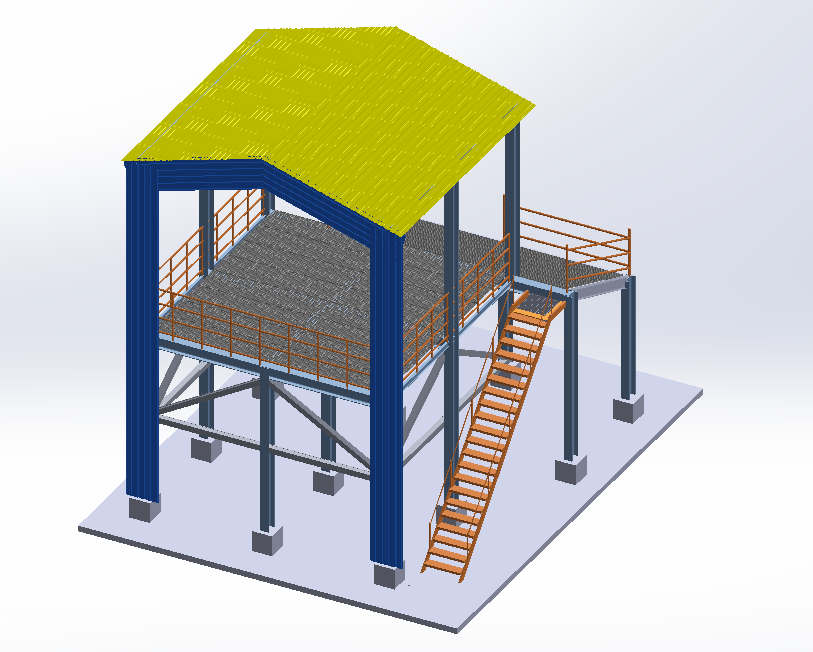

Structural CAD · Engineering project
Steel Platform & Access Structure
Structural CAD · Mechanical design
The project
At Guide Valve, I designed industrial valve assemblies and prepared the drawings and documentation needed to communicate them.
The challenge
The challenge was to coordinate the roof, structural columns, braces, deck, stairs and guardrails in a clear assembly layout.

My contribution
The work behind it
- 01
I developed the overall arrangement of the raised platform and its supporting structure.
- 02
I integrated the stairway, landing and guardrails with the elevated deck.
- 03
I used the 3D view to review placement and interfaces between structural and access components.
Outcome
What came out of it
A coordinated CAD layout of the structure and its access arrangement. The available screenshot does not establish load verification or fabrication.
Structural CAD concept · Scope limited to the supplied model.
Methods & tools
- Structural CAD
- 3D assembly
- Staircase and landing
- Guardrail layout